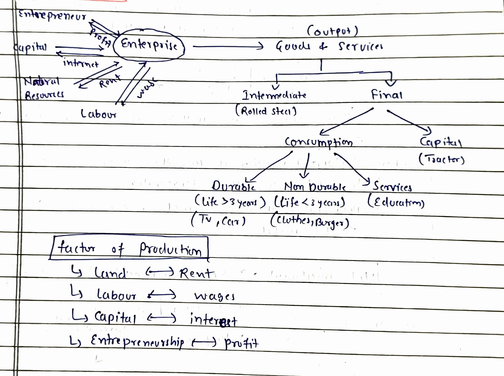
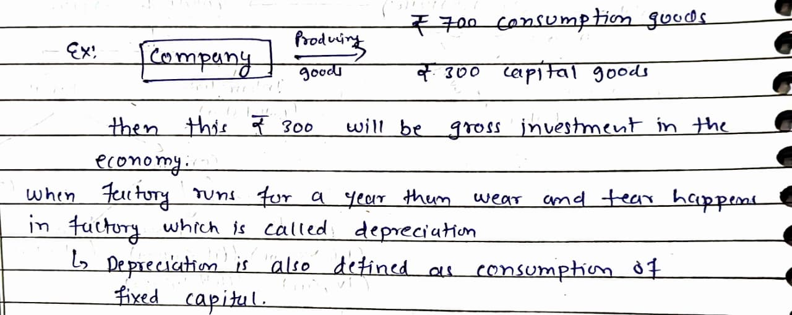
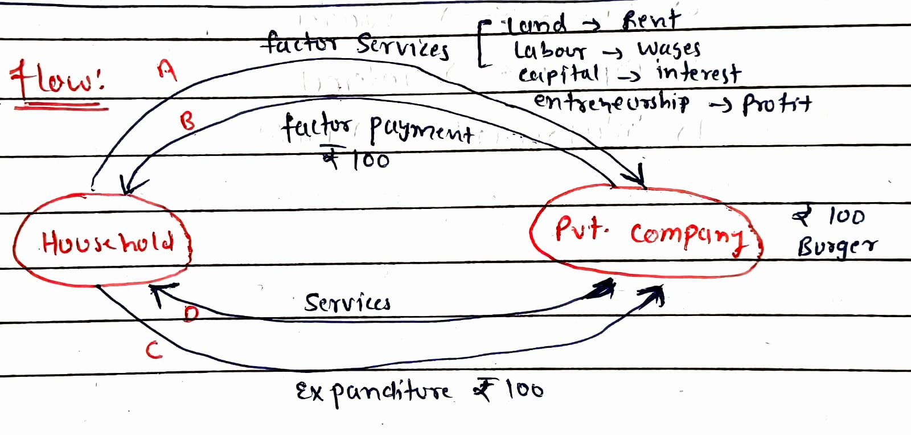

Macro Economy
Study of national economy as a whole.
It studies wide variety of areas like how total investment and consumption in the economy are determined, how central bank manages money and interest rates, and what causes international financial crisis etc.
Three Problems of Economy
- What – Commodities to be produced and in what quantity (e.g. pizza, shirts – high or low quality)
- How – Who will do production and with what resources (electricity, coal, sun, water etc.)
- For Whom – Who gets the fruits of economic activity and how wealth is distributed among households
Economic Systems
- Command Economy
- Market Economy
Four Sectors of Economy
Mixed economy is divided into four sectors:
- Private Sector – Enterprises owned by private individuals. For Example: Companies/ firms/ Enterprises.
- Government Sector – Public administration, police, defence, PSUs etc.
- Household Sector – People living together and sharing a common kitchen
- External Sector – Export and import of goods and services
Private Sector
Factors of Production
- Land → Rent
- Labour → Wages
- Capital → Interest
- Entrepreneurship → Profit
Types of Goods
Consumption Goods
Consumed by ultimate consumer to meet immediate needs.
Capital Goods
- Durable man-made output
- Used as input for further production
- Not consumed while acting as input
Investment
That part of final output which comprises physical capital is called gross investment.
Example
Net Investment = Gross Investment – Depreciation
Circular Flow
Assumptions
- No government, no external sector
- Only household & private sector
- All factors of services are provided by household
- Payment of services is provided to household
- Goods are purchased by household and money is given to private sector
From diagram:
- C & D represent goods & services market
- A & B represent factor of production market
Value of burger = ₹100 → GDP of the country for that year.
GDP Measurement
GDP can be measured in three ways:
- Expenditure method
- Product method
- Income method
Concept of Saving & Investment
Household decides to spend only ₹70 for consumption and save ₹30.
Enterprise produces burgers worth ₹70 only.
₹30 saved in bank → enterprise takes loan of ₹30 for capital goods for future production.
This implies:
- Saving = Production of capital goods
- Capital goods = Investment
- Higher savings = Higher investment
In India
Initial years of independence:
95% consumption goods, 5% capital goods
In 2019–20:
72% consumption goods, 28% capital goods
Stock Variable
- Measured at a particular point of time
- Example: Bank balance
- Point of time
Flow Variable
- Measured over a period of time
- Example: Interest earned on bank deposit for 1 year
- Time range (e.g. 2024–25)